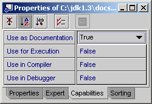

Situation: You are using external libraries (.jar, zip) and have an HTML Javadoc where you want SunTM ONE Studio and RefactorIT to show the Javadoc classes, interfaces, fields, and methods.
Solution: Mount the directories containing the Javadoc and set "Use in Documentation" to True and all other "Use in ..." attributes to False in the Capabilities tab of the property sheets for those filesystems. Thus,
Go to the Filesystem tab of the Explorer.
Mount the directory containing the Javadoc, which usually has the following directory structure:
docs
- api
- index.html
- index-all.html
...
Mount the api directory.
Go to the Capabilities tab of the property sheet.
Set "Use in Documentation" to True and all other "Use in ..." attributes to False.

Now if you right-click on a class or method in source code, you can:
Choose "Show Javadoc" SunTM ONE Studio's functionality. This will show the Javadoc for any interface, class, method, or field for which you have mounted external HTML Javadoc.
Choose Tools->RefactorIT->Info. This will show Javadoc for any interface, class, method or field that is declared in your source code or for which you have mounted external HTML Javadoc.